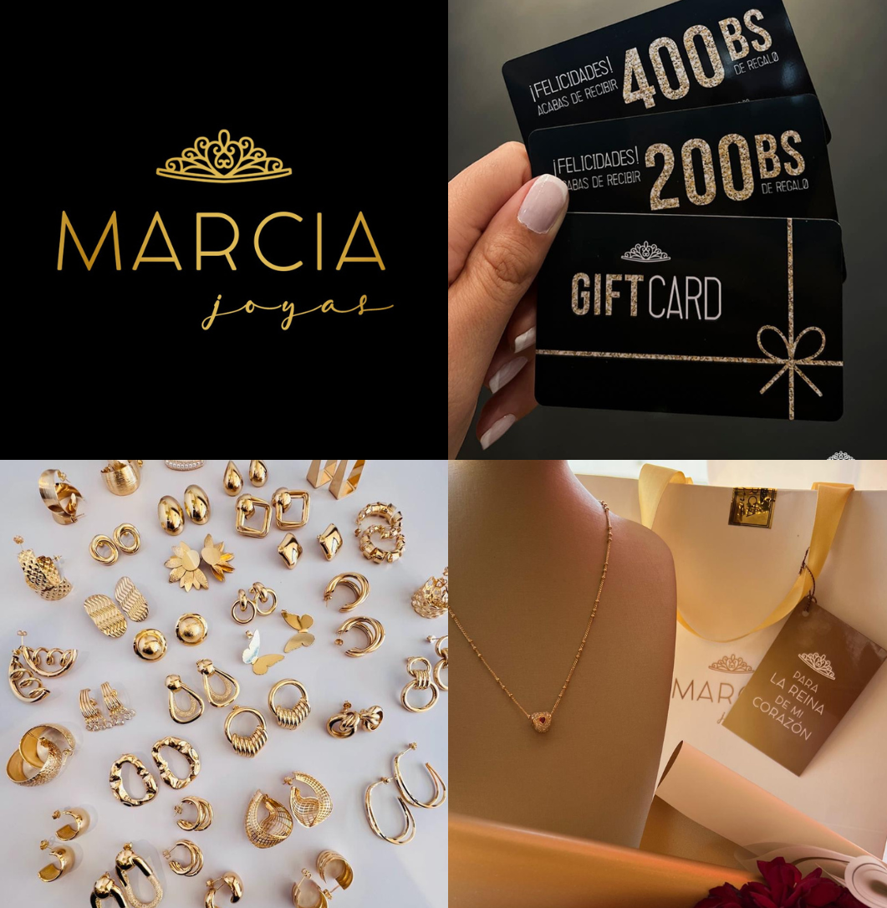
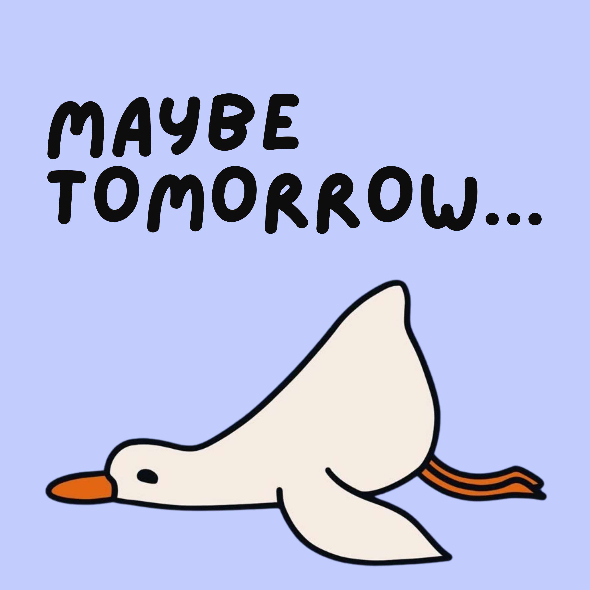
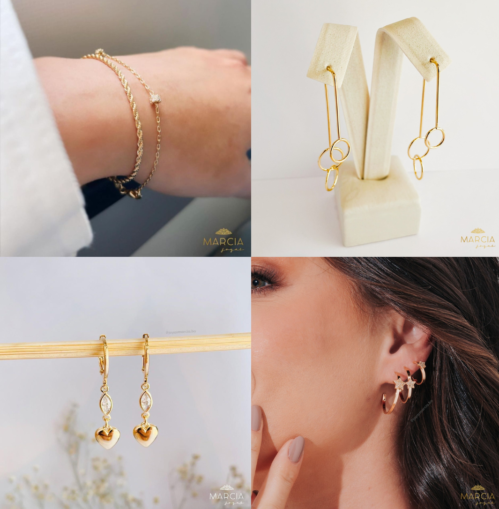
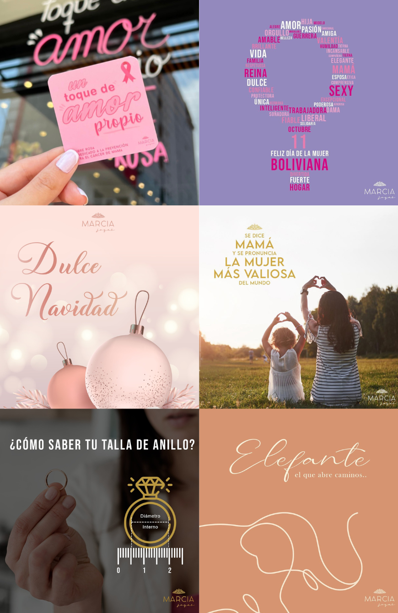

Video Production
Short-form audiovisual projects focused on visual storytelling, editing rhythm, framing, and atmosphere.
Night Shoot Santa Cruz, Downtown
Concept, shot planning, filming on Sony ZV-E10 II, and editing.
Creative challenge: capturing a traditional location in cinematographic style, at night with no natural light, emphasizing artificial glow, moody atmosphere, and dynamic movement.
Production – Café Buena Vista
“Start your day with properly made coffee”
Concept, shot planning, filming, editing, and sound design — all captured on iPhone to showcase a simple morning routine with focus on light, movement, and satisfying details.
Tutorial – Marcia Joyas
“Measure your ring size with an app”
Created for a jewellery brand — concept, shot planning, filming, and editing, to deliver a quick, clear how-to guide and intuitive flow.
Branding
Marcia Joyas – Rebrand Journey
Led the complete visual rebrand for this jewellery store — from concept and moodboarding to logo design, colour palette, typography guidelines, campaign assets, and mockups.Modernised the brand for younger audiences while keeping its joyful essence “Small details, big smiles”.

Podcast Production
“Maybe Tomorrow” – Anti-Procrastination Podcast
Digital Media Production project for MSc in Interactive Digital Media.
Created a full podcast episode tackling procrastination — sharing struggles with perfectionism and fear of failure, plus practical tools like to-do lists and mindfulness practices.
Conversational solo style inspired by Blindboy Podcast and Diego Dreyfus, hosted on Spotify with original artwork and Pixabay lo-fi jazz/SFX.
Produced end-to-end: show notes, Riverside.fm for recording/editing, Focusrite Scarlett 2i2 studio mic, and research from “Get Things Done” by Mikael Krogerus.

Product photography

Marketing campaigns & Content creation
Developed ATL/BTL campaigns like for Marcia Joyas, festive promotions—featuring emotional storytelling, custom visuals, and social media boosts to engage audiences and drive sales.
Conversational, heartfelt style inspired by local cultural vibes, shared across social media.
Produced end-to-end: campaigns ideation, Adobe Suite for digital and printed graphics, content calendars.
